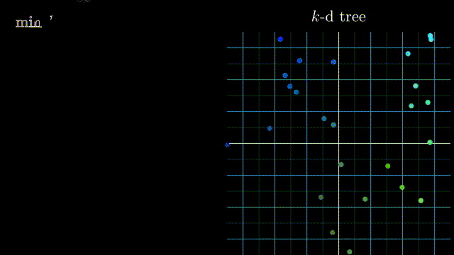
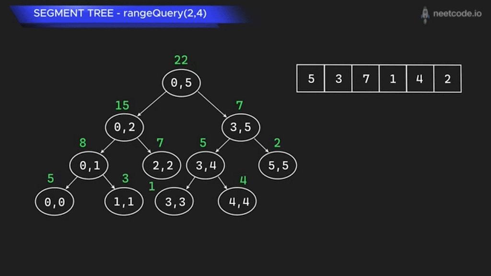
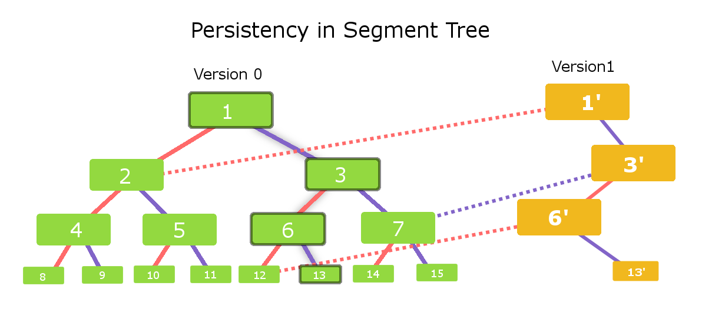
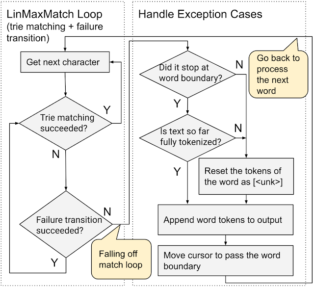
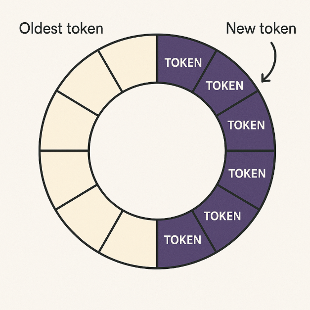
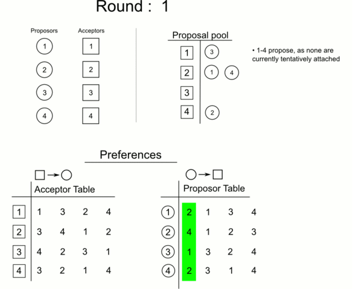
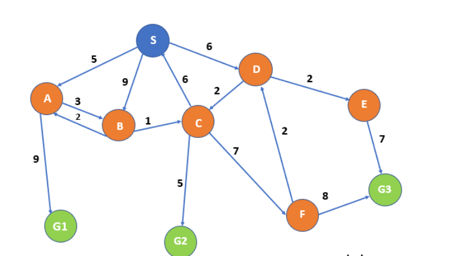
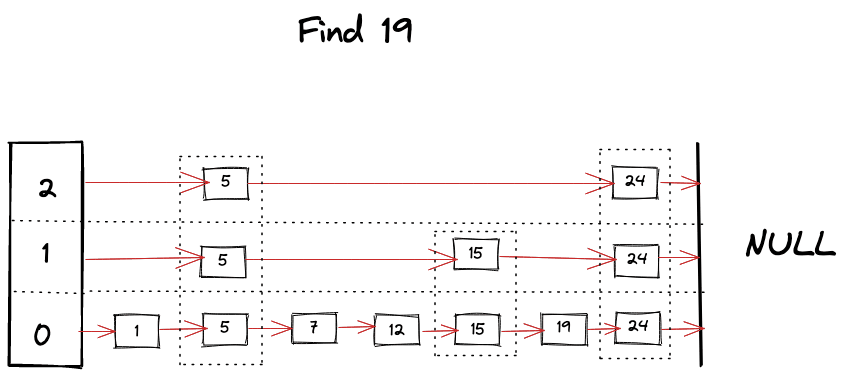
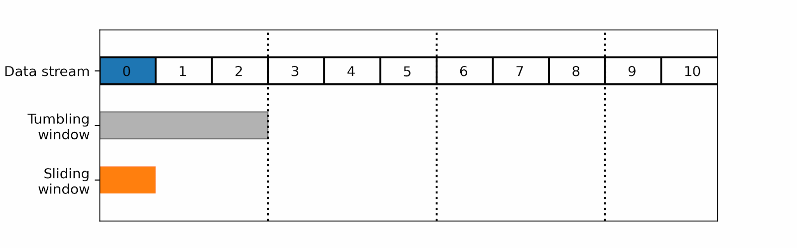
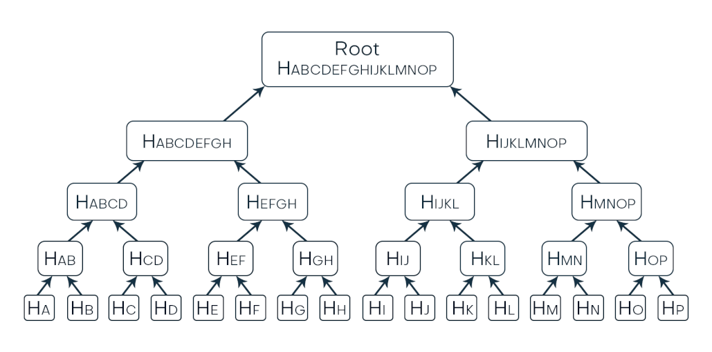

About Me
Hello, I'm Rohit!
I'm a Computer Science student with a passion for building innovative solutions. My work focuses on web development and machine learning, where I enjoy tackling challenges and creating meaningful impact through technology. Currently pursuing B.E. in Computer Science and Engineering at KLE Technological University with a CGPA of 9.03.
Education
KLE Technological University
9.03 CGPAB.E. in Computer Science and Engineering
Coursework: Advanced algorithms, machine learning, data structures, computer vision, and software engineering practices.
Projects & Experience
NVIDIA - Traffic Light Detection
January 2025 - Present | Remote- Developing a YOLOX-based traffic light detection framework for autonomous driving
- Analyzing Bosch Small Traffic Lights Dataset with augmentation techniques
- Conducting experiments to evaluate YOLOX performance under diverse lighting conditions
Multimodal Transformer Framework
- Developed a lightweight multimodal transformer framework for estimating image differences in autonomous systems
- Utilized the BDD100K dataset and Vision Transformer (ViT) for feature extraction, integrating multimodal models like OpenGVLab/Mini-InternVL-Chat-2B-V1-5
- Designed the model for real-time analysis with low power usage, ensuring scalability for autonomous driving and robotic vision
Online Course Enrollment System
December 2024 - January 2025- Developed an e-Course Enrollment System with user authentication, credit management, and course recommendations
- Built a responsive UI with React.js and optimized backend with Node.js, Express.js, and MySQL
- Implemented user-friendly interface that improved enrollment completion rates by 35%
Poetry Generation with GPT-Neo
- Fine-tuned GPT-Neo for poetry generation, enhancing rhyme structure and thematic consistency
- Applied top-k sampling and temperature scaling to boost fluency and creativity
- Achieved a 12.77% improvement in semantic coherence over GPT-4
Technical Skills
Programming Languages
Frameworks & Libraries
Databases & Tools
🌐 Domain: Google
About Google
Google is a global tech leader that specializes in internet-related services and products, including:
- Search Engines - World's most widely used search technology
- Cloud Computing - Scalable infrastructure and services
- Online Advertising - Digital marketing and business intelligence
- Operating Systems - Android, Chrome OS powering billions of devices
- Hardware - Pixel, Nest, Fitbit consumer products
- Artificial Intelligence & Machine Learning - Advanced AI research and applications
It operates under its parent company Alphabet Inc., which houses a diverse set of sub-companies and technologies that are shaping the future.
Why Google?
Google embodies innovation, scale, and impact. Its engineering culture encourages experimentation and excellence, making it the ideal environment for someone like me who loves building intelligent systems and solving large-scale problems. Through this portfolio, I aim to demonstrate how my technical skills align with the challenges faced in various Google products.
Business Case Studies
Case Study 1: Search Autocomplete & IP Routing with Trie

Real-Time Challenges
Systems like Google Search, YouTube, and Google DNS must provide:
- Low-latency responses
- High accuracy
- Scalable prefix-based lookups
The underlying challenge: Quickly matching input prefixes to known queries or routes.
Core Data Structures
| Use Case | Data Structure | Purpose |
|---|---|---|
| Search | Trie (Prefix Tree) | Fast lookup of user query prefixes |
| IP Routing | Binary Trie (0/1) | Match IPs to longest prefix route |
| Ranking Results | Min Heap / PriorityQ | Top-K search suggestions |
| Frequency Count | Hash Map | Store query popularity |
Algorithm: Search Autocomplete
- Insert Queries:
- Store user queries into a Trie.
- Track frequency using a Hash Map.
- Suggest Completions:
- Traverse Trie using input prefix.
- Use DFS to collect possible completions.
- Rank top-K suggestions via Min Heap.
Algorithm: IP Routing
- Insert Routes:
- Convert IP prefixes (e.g.,
192.168.0.0/16) into binary. - Insert into a Binary Trie, marking next-hop details.
- Lookup IP Address:
- Convert IP address to binary.
- Traverse Trie to find longest prefix match.
Time & Space Complexity
| Operation | Time Complexity | Space Complexity |
|---|---|---|
| Insert Query/Route | O(N × L) / O(R × 32) | O(N × L) / O(R × 32) |
| Prefix Match (Search) | O(P) | O(K) (Top-K suggestions) |
| Prefix Match (Routing) | O(32) (IPv4 fixed) | — |
| Suggestion Retrieval | O(M log K) | — |
Where:
- N = number of queries
- L = average query length
- R = number of routes
- P = input prefix length
- M = total suffixes
- K = number of suggestions
Real-World Usage at Google
- Autocomplete: Google Search, Gmail, YouTube, Android Keyboard
- Routing: Google DNS (8.8.8.8), CDNs, Cloud Routers
Tries allow scalable and intelligent systems that feel instantaneous to the user.
Case Study 2: Route Optimization for Google Maps Navigation
Challenge
Google Maps needs to compute shortest and fastest routes from millions of locations in real-time. The challenge lies in handling dynamic road conditions like traffic, closures, construction, and accidents — all while keeping routing fast and accurate.
What is A* Search?
A* (A-Star) is a best-first search algorithm that finds the optimal path by balancing two factors:
g(n): Actual cost from start node to current nodeh(n): Heuristic estimate of the cost from current node to goal
It selects the path with the lowest f(n) = g(n) + h(n).
Compared to Dijkstra’s algorithm (which uses only g(n)), A* adds goal awareness through h(n), making it more efficient in practice.
Heuristic Design in Real Systems
We can use informed heuristics that are both fast and realistic:
- Straight-line distance (Haversine or Euclidean) — base estimate.
- Real-time traffic data — adds weight to congested roads.
- Road type priority — highways are faster than city roads.
- Time-of-day effects — rush hour patterns, school zones.
- Dynamic closures & incidents — makes some edges temporarily unusable.
These heuristics can help guiding the search efficiently while adapting to real-world constraints.
Time and Space Complexity
| Operation | Complexity |
|---|---|
| Time (Worst Case) | O(E) or O(V + E) log V (with Min Heap) |
| Space | O(V) |
Where: V = number of nodes (intersections), E = number of edges (roads)
In practice, A* performs significantly faster due to the heuristic narrowing the search area.
Case Study 3: Accelerating Location-Based Search with KD-Tree
Problem
How can systems like Google Maps, Zomato, or CDNs quickly find the nearest location (restaurant, driver, server) based on a user's current position—in real time?
Solution: KD-Tree (K-Dimensional Tree)
A KD-Tree is a binary tree that organizes points in space (like latitude & longitude). It enables:
- Fast nearest-neighbor searches
Perfect for geo-based systems.
How It Works
- Build Tree:
- Recursively split points on alternating dimensions (lat, lon).
- Build takes O(N log N) time.
- Search:
- Traverse tree comparing user's location with nodes.
- Use a priority queue (Max Heap) to keep the top-K closest points.
- Prune distant branches for speed.
Time & Space Complexity
| Operation | Time (Avg) | Space |
|---|---|---|
| Build Tree | O(N log N) | O(N) |
| Nearest Search | O(log N) | O(K) |
Where: N = number of locations, K = number of nearest results
KD-Trees strike a great balance between speed and accuracy, making them essential for real-time, location-aware systems.
Case Study 4: Optimizing Storage and Bandwidth with Lossless Data Compression

Challenge
Compress large volumes of data efficiently without losing any information.
Solution Overview: Huffman Encoding
A lossless compression algorithm that assigns shorter binary codes to frequent symbols and longer codes to rare ones, reducing overall data size.
Working
- Count frequencies of symbols.
- Build a binary tree from least to most frequent symbols.
- Assign unique prefix codes by traversing the tree.
- Replace symbols with their binary codes for compression.
Real-World Usage at Google
- Compressing images (JPEG in Google Photos)
- Audio compression in YouTube Music
- HTTP/2 header compression in Google Chrome
Case Study 5: Instantaneous Time-Series Analysis for Monitoring and Analytics
Challenge
Google systems like YouTube Analytics and Cloud Monitoring must perform real-time range queries (sum, min, max) and updates on large time-series data efficiently.
Solution: Segment Trees
A Segment Tree is a binary tree that enables log-time range queries and updates by dividing data into manageable segments.
Use Cases:
- Track views/clicks in a date range
- Detect anomalies in system metrics
- Real-time monitoring in dashboards
Core Data Structures
- Segment Tree Array: Compact binary representation
- Lazy Propagation (Optional): For efficient range updates
How It Works
- Build: Recursively divide and compute values
- Query [L, R]: Combine relevant segments
- Update: Modify value and update parent nodes
Complexity
| Operation | Time | Space |
|---|---|---|
| Build | O(N) | O(2 × N) |
| Query/Update | O(log N) | — |
Case Study 6: Enabling Efficient Version Control with Queries
Challenge
Modern systems like Google Docs, Sheets, and BigQuery need to:
- Track data over time (version control)
- Support rollback/undo
- Enable temporal queries — all without duplicating entire datasets for each change
Solution: Persistent Segment Trees
A Persistent Segment Tree maintains multiple versions by copying only the modified nodes during updates, while sharing the rest of the structure. This allows efficient time-based querying and updates.
Algorithm
- Each update creates a new root version.
- Previous versions remain intact.
- Ideal for querying across different versions.
Supported Operations
update(index, value, version)→ creates a new versionquery(left, right, version)→ returns result for a specific range in a version
Core Concepts
| Concept | Description |
|---|---|
| Immutability | Each version is a read-only snapshot |
| Structural Sharing | Only changed path is duplicated (rest reused) |
| Functional Design | Works well in distributed, stateless systems |
Time & Space Complexity
| Operation | Time Complexity | Space Complexity per Update |
|---|---|---|
| Build Tree | O(n) | O(n) |
| Update | O(log n) | O(log n) |
| Range Query | O(log n) | O(1) |
| Version Storage | — | O(log n) per version |
Where: n = number of elements in array or range
Only log n new nodes are created per update, making it space-efficient.
Real-World Use Cases
- Google Docs: Maintain full edit history without copying entire documents
- Google Sheets: Versioned formulas/data to support undo, audit logs
- BigQuery: Enable historical range queries over time-partitioned data
Persistent Segment Trees offer the perfect balance of versioning, efficiency, and query power, making them ideal for systems where history matters.
Case Study 7: Optimizing Large-Scale Offline Range Queries for Analytics

Challenge
In analytics systems like Google Trends, YouTube Analytics, or Ad Reporting, we often need to process many offline range queries like:
- Users watched videos between day 20 and day 40
- The most frequent query between time A and B
Running each query separately can be slow—especially on large datasets with tight performance needs.
Solution: Mo’s Algorithm
Mo’s Algorithm is an offline query optimization technique for range queries. It reorders the queries smartly to minimize redundant work when moving from one query to another.
Working
- Divide array into blocks of size √N
- Sort queries by block of L, then R
- Initialize current window
[moLeft, moRight] - For each query:
- Adjust
moLeftandmoRightusingadd()orremove() - Record the answer for that range
Because adjacent queries change the window slightly, total cost is minimized.
Time & Space Complexity
| Operation | Time | Space |
|---|---|---|
| Preprocessing | O(Q log Q) | O(Q) |
| Query Handling | O((N + Q) √N) | O(N) |
Where: N = array size, Q = number of queries
Uses
- YouTube Analytics: Fast unique user queries over watch history
- Ad Campaign Reporting: Frequency and count-based range stats
- Google Trends: Offline computation of trends over time intervals
- Search Query Logs: Efficient querying for frequency, count, or mode across ranges
Mo’s Algorithm shines when we know all queries upfront and want speed without full recomputation—perfect for batch reporting and offline analytics.
Case Study 8: Efficient Tokenization in Large AI Models
AI Context Management Problem
Large language models (LLMs) like Gemini operate on tokens. The system must:
- Map input text to tokens efficiently
- Handle millions of vocabulary entries
- Do so with minimal latency during inference
Core Data Structures
| Component | Data Structure | Purpose |
|---|---|---|
| Vocabulary Store | Trie | Fast prefix-based token matching |
| Token Lookup | Hash Map | Mapping tokens to IDs/embeddings |
Tokenization Algorithm
- Tokenize Input:
- Read input string character-by-character
- Match the longest prefix in the Trie
- Convert to corresponding token ID (via hash map or array)
Time & Space Complexity
| Operation | Time Complexity | Space Complexity |
|---|---|---|
| Insert Vocabulary | O(N × L) | O(N × L) |
| Token Lookup | O(P) | — |
Where:
- N = number of tokens
- L = average token length
- P = prefix length in input string
Managing the Context Window: Using a Ring Buffer
Transformers like those in Gemini or ChatGPT operate within a fixed-size context window (e.g., 8,192 tokens). This means:
- Oldest tokens must be discarded once the limit is reached
- Context must be efficiently updated without full reprocessing
Solution: Ring Buffer (Circular Buffer)
A ring buffer allows:
- O(1) insertion and removal of tokens
- Efficient memory reuse (no shifting required)
- Seamless sliding of the context window as conversation grows
How it works:
- The buffer holds the last N tokens (where N is the context limit).
- As new tokens are generated or input, they overwrite the oldest ones.
- This structure is ideal for chatbots, where ongoing conversation history must be preserved up to a limit.
Combining Trie for tokenization and Ring Buffer for context control enables scalable, high-performance AI systems.
Case Study 9: Achieving Stable and Fair Matching in Resource Allocation
Challenge
Efficiently pair two groups based on mutual preferences, ensuring no two entities would prefer to deviate from their assigned match—i.e., no instability.
Solution: Gale–Shapley Algorithm (Deferred Acceptance)
This classic algorithm finds a stable matching in O(n²) time:
- One group (e.g., candidates) proposes to its top-ranked options.
- The receiving group (e.g., companies) tentatively accepts the best proposal so far, rejecting others.
- Rejected candidates move to their next preferred choice.
- The process repeats until all are matched.
- Guarantees Stability: No two individuals would swap and be happier.
- Group-Optimality: The proposing group always gets its best possible stable match.
Time & Space Complexity
| Operation | Complexity |
|---|---|
| Time (worst-case) | O(n²) |
| Space | O(n²) |
More Use Cases
- Mentor-Mentee Matching in internal programs
- Cloud VM Scheduling based on workload and hardware affinity
- Local Ads Delivery matching businesses to ad slots with mutual preferences
Stable Marriage is a powerful abstraction for fair, stable, and preference-driven assignments across diverse use cases.
Case Study 10: Finding the Optimal Path in Cost-Sensitive Systems
Challenge
Efficiently finding the lowest-cost path or optimal solution in large-scale graphs with varying edge costs, such as optimizing network routing or task scheduling in Google’s infrastructure.
Solution: Uniform Cost Search
UCS is a graph search algorithm that always expands the node with the smallest cumulative cost first, guaranteeing the optimal path when edge costs vary.
- Uses a priority queue to select the next node with the least total cost so far.
- Continues exploring until the goal node is reached, ensuring the path found is the minimum-cost.
- Handles multiple goal nodes by stopping as soon as any goal is reached with the lowest cost.
- More suitable than BFS when edge costs are non-uniform.
Time & Space Complexity
| Operation | Complexity |
|---|---|
| Time (worst-case) | O(b^(1 + ⌊C*/ε⌋)) |
| Space | O(b^(1 + ⌊C*/ε⌋)) |
Where: b = branching factor, C* = cost of optimal solution, ε = minimum edge cost
Applications at Google
- Network Routing: Computing least-cost paths across Google’s global data center networks, balancing latency and bandwidth costs.
- Task Scheduling: Ordering job executions in Google Cloud to minimize resource consumption and costs.
- Google Maps Navigation: Finding cheapest routes considering dynamic costs like traffic and tolls.
- Distributed Resource Allocation: Assigning compute/storage resources efficiently across clusters based on cost metrics.
Uniform Cost Search enables optimal, cost-aware decision making across Google’s large-scale, weighted graph problems, especially where multiple potential goals exist.
Case Study 11: A Foundation for Security: Enabling Cryptography and Data Integrity
Challenge
Google requires efficient modular arithmetic operations for cryptography, data integrity, and distributed systems, where modular division is needed but direct division is not possible.
Solution: Modular Multiplicative Inverse (MMI)
MMI computes the inverse of an integer a modulo m, finding x such that: (a × x) ≡ 1 (mod m)
This enables modular division critical for:
- Cryptographic protocols: RSA, ECC for secure communication
- Error detection and correction: Checksums and hashing
- Consistent hashing: Load balancing in distributed storage
Common methods to compute MMI:
- Extended Euclidean Algorithm (efficient and general)
- Fermat's Little Theorem (when modulus is prime)
Time & Space Complexity
| Operation | Complexity |
|---|---|
| Extended Euclidean Algo | O(log m) |
| Fermat's Little Theorem | O(log m) |
Applications at Google
- Encryption & Decryption: Secure data transmission between Google services.
- Integrity Checks: Hash-based authentication and error correction.
- Distributed Systems: Efficient and balanced resource allocation using consistent hashing.
MMI is a fundamental building block enabling secure, efficient, and reliable modular arithmetic in Google's large-scale systems.
Case Study 12: Enabling Real-Time Sorted Access in Distributed Databases
Problem: Maintaining Ordered Data with Fast Range Access
Systems like Bigtable, Cloud Spanner, and LevelDB must handle:
- Massive dynamic datasets
- Frequent inserts/deletes
- Fast range scans and point lookups
- With low latency and high concurrency
Traditional balanced trees (e.g., AVL, Red-Black) are hard to scale across threads and machines due to complex rotations and locking.
Solution: Skip List
A Skip List is a probabilistic data structure that behaves like a multi-level linked list. It offers:
- Data is stored in sorted order across multiple linked list levels.
- Nodes are randomly promoted to higher levels to balance the structure without complex rotations.
- Searches start from the highest level and drop down, skipping many elements for speed.
How It Works
- Each node may appear in multiple “levels” (randomly promoted)
- Higher levels act as express lanes for faster traversal
- Start search from the top, move forward until passed target, then drop down
Real-World Use Case: Google Bigtable’s Internal Index
Google Bigtable stores data in sorted key-value pairs. To:
- Insert rows in sorted order
- Query ranges of rows
- Delete outdated entries efficiently
Skip Lists can be used for in-memory indexing (MemTable).
Time Complexity (Average)
| Operation | Time Complexity |
|---|---|
| Search | O(log n) |
| Insert | O(log n) |
| Delete | O(log n) |
Insertions and deletions don’t require rebalancing. Randomization replaces structural complexity.
Skip Lists strike a perfect balance between simplicity and performance—powering real-time, ordered access across Google’s large-scale storage engines.
Case Study 13: Real-Time Spam Detection in Gmail
The Challenge
Gmail must detect spam immediately upon email arrival. With billions of emails sent daily, reprocessing entire datasets is too expensive.
We need an efficient method to extract insights from continuous data streams.
Solution: Sliding Window Algorithm
The Sliding Window technique allows us to process only the most recent subset of data efficiently.
- Time Efficiency: Only new data is processed as the window slides.
- Space Efficiency: Only the current window’s data is stored in memory.
Where k is window size, m is length of the pattern, n is length of the text, z is total output size.
Proposed Applications in Gmail
1. Spam Phrase Detection
- Rabin-Karp Algorithm: Rolling hash enables fast matching of phrases inside the window.
- Aho-Corasick Algorithm: Detects multiple spam phrases simultaneously in linear time.
2. Sender Behavior Monitoring
- Time-based sliding window can track email sending rates.
- Token Bucket algorithm can allow brief bursts but flag sustained high-volume behavior.
Time & Space Complexity
| Operation | Time Complexity | Space Complexity |
|---|---|---|
| Window Slide Update | O(1) | O(k) |
| Phrase Matching (Rabin-Karp) | O(m + n) | O(1) |
| Multi-pattern Matching (Aho-Corasick) | O(n + z) | O(m·k) |
Supporting Data Structures
| Data Structure | Use Case |
|---|---|
Deque |
Tracks max/min values, e.g., spike in send rate |
HashMap |
Stores frequency of phrases or sender activity |
Rolling Hash |
Efficient comparison of phrases inside the content window |
Final Impact
This approach enables real-time spam filtering without overloading Gmail’s systems, while maintaining user experience and system responsiveness.
Case Study 14: Enhancing Android App Update Integrity with Merkle Trees
Key Challenges
Google Play Store delivers large-scale app updates (APKs/AABs) to billions of Android devices. Ensuring security, efficiency, and data integrity—especially on unreliable networks or against tampered APKs—is crucial.
- Large File Sizes: APKs often exceed 100 MB.
- Update Resumption: Failed downloads traditionally require restarting.
- No Chunk-Level Verification: Full-file checksums can't detect partial tampering.
- Tampered APKs: Sideloaded or hacked apps may include malicious code.
- Efficient Patching: Users often have older app versions; downloading the entire new version is inefficient.
Solution: Merkle Tree-Based Integrity Verification
Introducing Merkle Trees enables chunk-level verification and secure patching during updates.
Algorithm
- Chunking: APK/AAB is split into fixed-size blocks (e.g., 4 KB).
- Leaf Hashing: Each chunk is hashed using SHA-256.
- Tree Construction: Hashes are recursively combined up to a signed Merkle Root.
- Verification:
- Clients use Merkle Proofs to validate each chunk.
- If any chunk is corrupted or modified (e.g., via sideloading), validation fails.
- Delta Updates:
- Only changed chunks are downloaded (e.g., between app version 1.0 and 1.1).
- Verified using Merkle proofs, ensuring only correct, untampered blocks are accepted.
Benefits
- Detects tampered APKs (even if modified offline)
- Secure resumption of interrupted downloads (helpful for larger data)
- Efficient updates by downloading only changed chunks
- Reduces bandwidth and load on Google's infrastructure
- Scales to billions of devices
Underlying Concepts
- Merkle Tree: Binary tree of SHA-256 hashes built from app chunks.
- Merkle Proof: Enables client to verify individual chunk integrity.
- Digital Signature: Authenticates the Merkle Root and prevents tampering.
Enhancements
By integrating Merkle Trees more deeply with delta update mechanisms, Google can further:
- Improve differential patching granularity
- Reduce unnecessary data transmission
- Catch any unauthorized modifications, even if a single byte is altered
Case Study 15: Live Engagement Analytics in YouTube using Sliding Window
The Challenge
YouTube receives massive user engagement data every second. We need to process these streams in real time to support:
- Viewer drop-off analysis
- Peak interaction tracking
- Ad placement optimization
Solution: Sliding Window for Streaming Analytics
By continuously moving a time window across live data, we can extract insights with minimal overhead.
- Real-time feedback
- Low memory consumption
- Avoid full data reprocessing
Applications in YouTube
1. Watch-Time Drop Detection
- Analyze engagement logs within a sliding window to detect where viewers stop watching.
- Flag timestamps like
00:45–01:15as boring or disengaging.
2. Real-Time Engagement Monitoring
Use sliding windows to track:
- Live peak viewer counts
- Burst in likes/subscribers
- Optimal ad display timing
- Spikes in comments/interactions
Time & Space Complexity
| Operation | Time Complexity | Space Complexity |
|---|---|---|
| Engagement Window Slide Update | O(1) | O(k) |
| Aggregate Metrics (sum, avg, etc) | O(1) or O(log k) | O(k) |
| Spike/Peak Detection (e.g. via deque) | O(1) | O(k) |
Where k is the sliding window size (e.g., 60s of interactions).
Supporting Data Structures
| Data Structure | Use Case |
|---|---|
Deque |
Efficient peak/min tracking within current window |
HashMap |
Aggregation and categorization of interaction types |
Rolling Hash |
Less relevant here, but can be used in video content fingerprinting |
Final Impact
Sliding Window-based analysis empowers YouTube to adapt content delivery and enhance viewer experience, all while handling massive-scale, high-frequency data.
All the references are here
Get in Touch
Let's Connect
I'm always open to discussing new projects, creative ideas, or opportunities to be part of your vision.